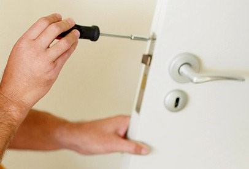

În momentele de cumpănă, atunci când o ușă rămane blocată, cu siguranță veți încerca să rezolvați problema rapid. Dacă prima soluție, cea de a căuta problema chiar dvs, nu dă roade, cu siguranță veți fi tentați să chemați un specialist care să deblocheze ușa și să vă ofere acces către încăperea respectivă.
Intervențiile mele au coincis cu 15.000-20.000 de solicitări venite atât din partea persoanelor juridice cât mai ales din partea persoanelor fizice, intervenții ce au avut ca finalizare, rezolvarea în cel mai profesionist mod a lucrării pentru care am fost solicitat satisfăcând la cel mai înalt nivel așteptările clienților. Indiferent de natura solicitării sau de clientul care a înaintat cererea, m-am deplasat în majoritatea locațiilor si am oferit toate cunoștintele mele în vederea unui proces de deblocare uși derulat în cele mai sigure condiții.
Nu are importanță meseria pe care o practici atâta timp cât o faci cu pasiune și respect față de clienți. Cu toate astea, în domeniul lacatușilor mecanici este important să ai o experiență vastă pentru a putea presta anumite servicii, iar acest lucru pot să-l confirm cu tărie. M-am confruntat cu numeroase situații în care doar experiența m-a ajutat să le rezolv, sutele de momente asemănătoare din trecut fiindu-mi de ajutor în soluționarea oricărui tip de problemă semnalată de client.
În orice proces de reparație, contează atât cunoștințele și îndemânarea specialistului dar mai ales uneltele folosite. Pentru a debloca o ușă sau pentru a-i repara diverse defecțiuni apărute, mă bazez pe unelte și scule profesionale, totul pentru ca serviciile să se realizeze în cele mai sigure condiții.
DEBLOCĂRI UȘI METALICE
DEBLOCĂRI UȘI LEMN
DEBLOCĂRI UȘI TERMOPAN
DEBLOCĂRI YALE
DEBLOCARE BUTUC UȘĂ
DEBLOCARE FEREASTRĂ
DEBLOCARE YALĂ / BROASCĂ UȘĂ
DEBLOCARE CHEIE RUPTĂ
REPARAȚII YALE
REPARAȚII BUTUC
MONTAJ SISTEME ÎNCHIDERE
REPARAȚII SISTEME ÎNCHIDERE
MONTAJ ACCESORII UȘĂ
SCHIMB ACCESORII UȘĂ
MONTAJE ȘI REPARAȚII DIVERSE
Serviciul de deblocări uși vă este oferit în regim de urgență în situațiile în care constatați că încuietoarea ușii nu mai funcționează și sunteți în imposibilitatea să intrați (ieșiți) în (din) locuință. Puteți solicita un lăcătuș și pentru situațiile în care ușa (yala) nu este blocată dar se constată că aceasta funcționează greu sau se blochează frecvent, în această situație dvs. având nevoie de o intervenție pentru reparații uși (metalice, lemn sau termopan). În cazul situației în care ați pierdut cheile ușii, puteți solicita deblocarea (deschiderea) ușii, urmată de înlocuirea yalei. Timpul de deblocare al ușii poate varia de la câteva minute până la câteva ore, depinzând de calitatea și prețul plătit de dvs. pe sistemul de blocare al ușii. Un sistem bun montat pe ușă (ușă din lemn sau termopan, nu neapărat ușă metalică) vă poate ține departe de vizitele nedorite ale hoților dar și de intervențiile de urgență necesare în cazul defectării (blocării) yalei sau mecanismului montat pe ușă.
